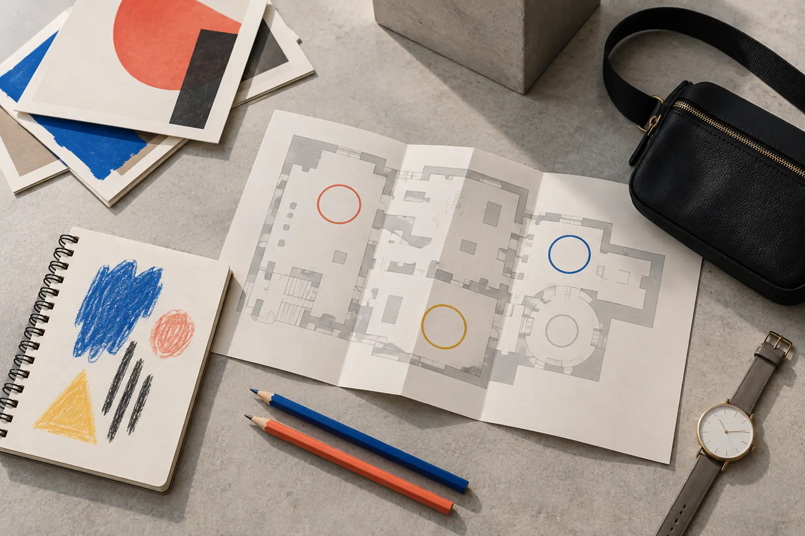

0–10 minutes
Park, use the restroom, store back-carried items in a free locker and read the posted rules.
Adult job: name the exit time now.
SYRACUSE · 90 MINUTES · SCHOOL-AGE KIDS · INDOOR
Do not try to complete the museum. Pick three works, give each child one job, use the building itself as the final stop, and leave while everyone still likes art.

The Everson works best as a short indoor looking trip, not a forced culture marathon. A school-age child can make three good observations, sketch one shape, notice the I. M. Pei building and be done. That is enough. The museum is in downtown Syracuse at 401 Harrison Street, across from the Oncenter, so parking and event traffic belong in the plan.
This guide does not promise a particular artwork or exhibition will be on view. Rotating galleries are the point. Check the current exhibition list, choose one likely anchor and keep a backup. If the chosen room is closed, the trip is not ruined; move to another gallery and preserve the 90-minute shape.
As checked October 10, the museum lists Monday and Tuesday closed; Wednesday 11 a.m.–5 p.m.; Thursday 11 a.m.–8 p.m.; Friday 11 a.m.–5 p.m.; and Saturday and Sunday 10 a.m.–5 p.m. Listed admission is $14 for adults, $10 for seniors and students, $5 for children 6–12, and $2 with an EBT card. Members, children 5 and under and military visitors with ID are listed as free. Confirm the exact household total on the official page before going.
Pay-what-you-wish is currently listed all day Wednesday and Thursday 5–8 p.m. The museum also says K–12 and college students with valid ID, plus seniors 65+, receive free Sunday admission through December 27, 2026, except the Festival of Trees & Light. That is a dated program, not a permanent promise. A lower-price window may be busier; choose it only if cost matters more than quiet.
The Everson lists limited free onsite parking in its Harrison Street lot, including four accessible spaces. It also lists metered cashless street parking at $2 per hour in two-hour intervals, plus Oncenter lot and garage rates that vary by duration. Availability depends on Oncenter events. Prices and traffic are volatile, so check both the museum visit page and the event situation the morning of the trip.
Put the backup garage or lot into the route before leaving home. “We will figure it out downtown” is not a parking plan. The family parking-lot routine still applies: people out first, adult controls the crossing, cargo waits.
Give children a physical cue: hands clasped loosely in front or holding the sketchbook at the belly. Do not demand silence. Use conversation volume, one speaker at a time, and walking feet. If a child repeatedly closes the 24-inch gap, switch to a wider room or leave. Protecting the art is not optional.
Adults should answer too. “I do not know, but I see…” is stronger than inventing a lecture. If a wall label answers the question, read only the useful sentence. The family museum-day system explains why three planned stops beat open-ended wandering.
The Everson says the museum is accessible and provides an advance social narrative, group narrative, communication aid and cue cards online and at the front desk. Review those materials before the trip if predictability helps. Call the museum with route, seating, mobility, sensory or communication questions; a general accessibility statement cannot answer a specific family need.
Louise café is currently listed Wednesday–Sunday from 11 a.m.–3 p.m. Treat that as an optional separate stop. Check hours and menu before promising lunch. A packed snack stays in the car or an allowed eating area, not the galleries. Use the bathroom-stop plan before starting the first gallery.
This is a strong rain or cold plan, but downtown travel still depends on road and weather conditions. If parking, mobility or a crowded special event breaks the plan, switch to the 45-minute library night or run the map game at home. Low-energy version: one gallery, one seated sketch, building view, exit in 45 minutes.
Skip the Everson today if the child needs climbing, loud hands-on exhibits or an unrestricted snack in hand. The MOST three-zone plan serves a different need. Skip when a high-attendance program or Oncenter event makes parking and crowds incompatible with your family. Do not stack the Everson, MOST and Erie Canal Museum into one “efficient” day unless the children asked for that much museum time.
MAKE THE DAY COUNT
Build the plan your family can finish well, then leave enough energy for the next part of the day.
More family plans